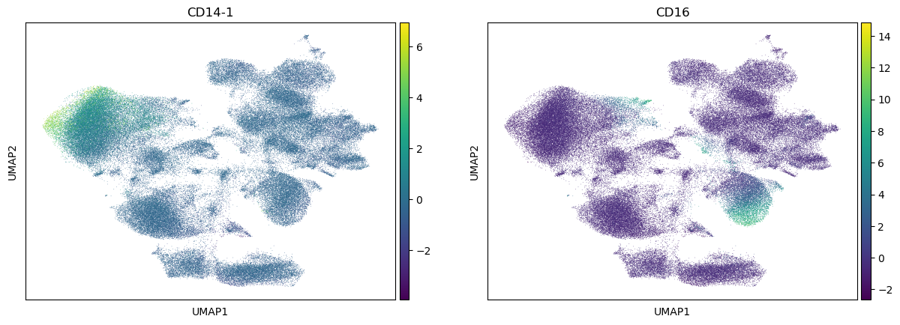
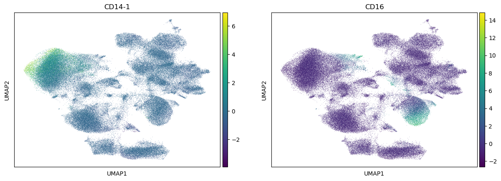

Batch correction
Contents
36. Batch correction#
36.1. Motivation#
As could be seen for our earlier visualized ADT data, batch effects between samples are very pronounced. Hence, batch correction to mitigate this effect is required. Generally, no purpose build methods for the batch correction of ADT data have been developed, and we therefore suggest applying methods designed for transcriptomics data to ADT data.
36.2. Environment setup#
import harmonypy as hm
import muon as mu
import numpy as np
import scanpy as sc
import seaborn as sns
import pooch
# setting visualization parameters
sc.settings.verbosity = 0
sc.settings.set_figure_params(
dpi=80,
facecolor="white",
frameon=False,
)
36.3. Loading the data#
cite_xdbt = pooch.retrieve(
url="https://figshare.com/ndownloader/files/41452434",
fname="cite_doublet_removal_xdbt.h5mu",
path=".",
known_hash=None,
progressbar=True,
)
mdata = mu.read("cite_doublet_removal_xdbt.h5mu")
It is not yet clear which batch effect correction works best for ADT data. For general purposes we recommend scVI [Lopez et al., 2018] or Harmony [Korsunsky et al., 2019] to perform batch correction of the data due to their robust performance on scRNA-seq data.
36.4. Harmony#
ho = hm.run_harmony(mdata["prot"].X, mdata["prot"].obs, ["donor"])
2023-10-05 14:42:07,939 - harmonypy - INFO - Computing initial centroids with sklearn.KMeans...
2023-10-05 14:42:57,421 - harmonypy - INFO - sklearn.KMeans initialization complete.
2023-10-05 14:42:58,062 - harmonypy - INFO - Iteration 1 of 10
2023-10-05 14:43:56,002 - harmonypy - INFO - Iteration 2 of 10
2023-10-05 14:44:55,510 - harmonypy - INFO - Iteration 3 of 10
2023-10-05 14:45:50,797 - harmonypy - INFO - Iteration 4 of 10
2023-10-05 14:46:48,891 - harmonypy - INFO - Iteration 5 of 10
2023-10-05 14:47:51,682 - harmonypy - INFO - Iteration 6 of 10
2023-10-05 14:48:57,953 - harmonypy - INFO - Iteration 7 of 10
2023-10-05 14:49:57,224 - harmonypy - INFO - Iteration 8 of 10
2023-10-05 14:50:43,659 - harmonypy - INFO - Iteration 9 of 10
2023-10-05 14:51:20,036 - harmonypy - INFO - Iteration 10 of 10
2023-10-05 14:52:39,501 - harmonypy - INFO - Converged after 10 iterations
pc_std = np.std(ho.Z_corr, axis=1).tolist()
sns.scatterplot(x=range(0, len(pc_std)), y=sorted(pc_std, reverse=True))
<Axes: >
mdata["prot"].obsm["X_pcahm"] = ho.Z_corr.transpose()
mdata["prot"].obsm
AxisArrays with keys: X_pcahm
sc.pp.neighbors(mdata["prot"], n_pcs=30, use_rep="X_pcahm")
sc.tl.umap(mdata["prot"])
sc.pl.umap(mdata["prot"], color=["donor", "batch"])

As we can see here, the cells of different donors are much more intermixed in the embedding than before.
sc.pl.umap(mdata["prot"], color=["CD4-1", "CD8", "CD3"])
sc.pl.umap(mdata["prot"], color=["CD14-1", "CD16"])
 

We check the expression of a few marker genes to confirm that separate cell types are still separate from each other. We can see that T cells still form a separate population that is further split into CD4 and CD8 T cells.
In following steps, you can now go ahead and cluster and annotate the cells in a similar process as it is described in the annotation chapter[LINK]. Here, we have only used the ADT part of the data and thus lost all of the information contained in the RNA part of the study. In other chapters, we will explore how you can make use of both modalities jointly, which allows for a more detailed cell type annotation for example.
mdata
MuData object with n_obs × n_vars = 119837 × 36741
var: 'gene_ids', 'feature_types'
2 modalities
rna: 119837 x 36601
obs: 'donor', 'batch'
var: 'gene_ids', 'feature_types'
prot: 119837 x 140
obs: 'donor', 'batch', 'n_genes_by_counts', 'log1p_n_genes_by_counts', 'total_counts', 'log1p_total_counts', 'n_counts', 'outliers', 'doublets_markers'
var: 'gene_ids', 'feature_types', 'n_cells_by_counts', 'mean_counts', 'log1p_mean_counts', 'pct_dropout_by_counts', 'total_counts', 'log1p_total_counts'
uns: 'doublets_markers_colors', 'neighbors', 'umap', 'donor_colors', 'batch_colors'
obsm: 'X_pcahm', 'X_umap'
layers: 'counts'
obsp: 'distances', 'connectivities'mdata.write("cite_batch_correction.h5mu")
36.5. References#
- spKMF+19
Ilya Korsunsky, Nghia Millard, Jean Fan, Kamil Slowikowski, Fan Zhang, Kevin Wei, Yuriy Baglaenko, Michael Brenner, Po-ru Loh, and Soumya Raychaudhuri. Fast, sensitive and accurate integration of single-cell data with harmony. Nature Methods, 16(12):1289–1296, Dec 2019. URL: https://doi.org/10.1038/s41592-019-0619-0, doi:10.1038/s41592-019-0619-0.
- spLRC+18
Romain Lopez, Jeffrey Regier, Michael B. Cole, Michael I. Jordan, and Nir Yosef. Deep generative modeling for single-cell transcriptomics. Nature Methods, 15(12):1053–1058, Dec 2018. URL: https://doi.org/10.1038/s41592-018-0229-2, doi:10.1038/s41592-018-0229-2.
36.6. Contributors#
We gratefully acknowledge the contributions of:
36.6.2. Reviewers#
Lukas Heumos
Anna Schaar